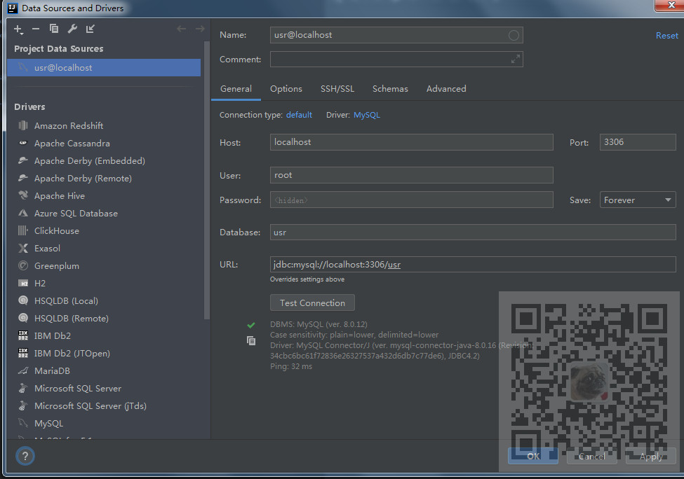
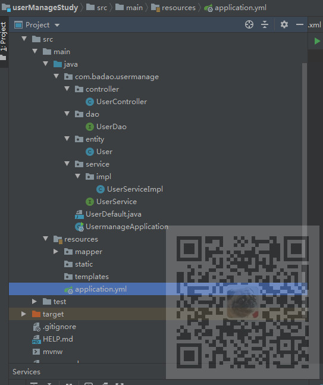

原文连接:https://www.cnblogs.com/badaoliumangqizhi/p/11885753.html
场景
EasyCode是基于IntelliJ IDEA开发的代码生成插件，支持自定义任意模板（Java，html，js，xml）。只要是与数据库相关的代码都可以通过自定义模板来生成。支持数据库类型与java类型映射关系配置。支持同时生成生成多张表的代码。每张表有独立的配置信息。完全的个性化定义，规则由你设置。
官方文档
https://gitee.com/makejava/EasyCode
在线安装
本地安装
离线包下载
https://gitee.com/makejava/EasyCode/releases
注意：
如果IDEA版本过低的话，在线安装是搜索不到插件的，而且使用离线安装包时也不行。也有对应的最低版本要求。
这里是IDEA 2019.2
注：
博客：
https://blog.csdn.net/badao_liumang_qizhi
关注公众号
霸道的程序猿
获取编程相关电子书、教程推送与免费下载。
实现
下面以在线安装为例详解EasyCode的使用
在线安装
打开IDEA--File-Settings-Plugins,搜索Easy Code ，点击Install
安装成功后，需要重启IDEA
重启后就会在Settings下有EasyCode选项，在这里可以配置模板等。
使用EasyCode生成代码
新建SpringBoot项目，在右侧DataSource面板下点击新增--Mysql
此时根据数据库的相关信息配置后，点击测试连接，会提示缺少驱动
如果此时你点击Download Driver Files 后，会因为网络原因提示超时的话
在左边连接上右击--Go to Driver
此时我们将原来报红的驱动删除
然后再点击右边 + 添加

这里选择了配置的Maven仓库中的Mysql8.0.16的驱动
然后再重新配置url以及用户名和密码等，测试连接，连接成功

然后就会在右边显示当前数据库所拥有的表
在当前表上右击--Easy Code -Generate Code
勾选要生成的代码模板和报名，点击ok
如果有缺失的包还会提示你是否创建
生成代码之后
